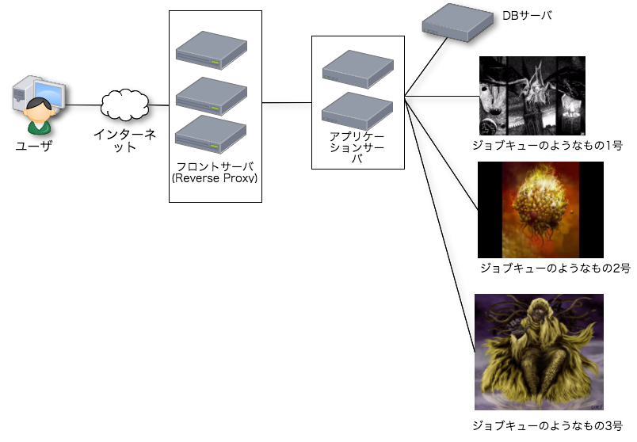
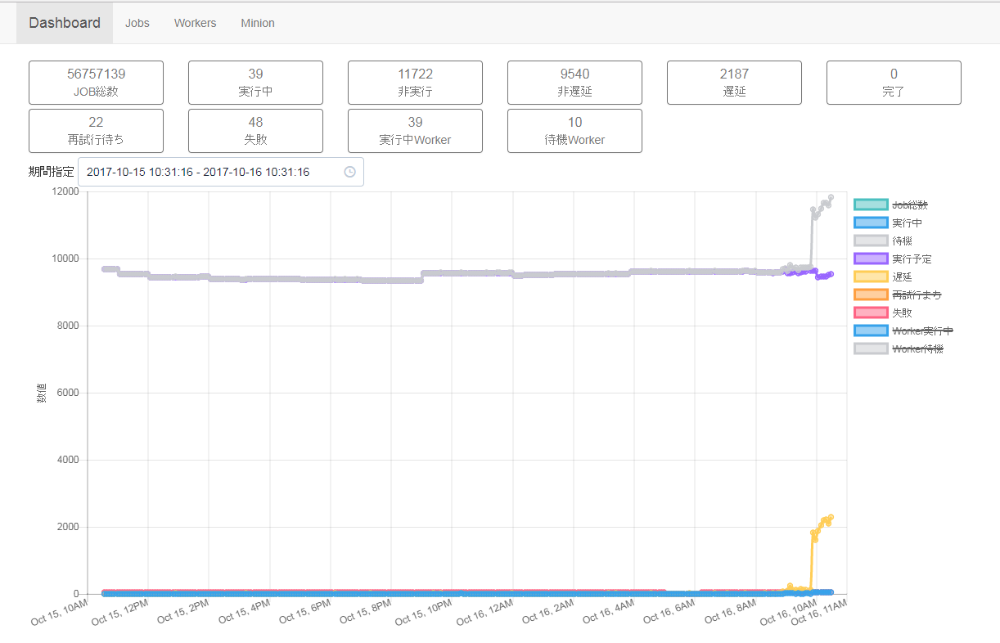

自己紹介
- 土田 拓也(つちだ たくや)
-
@tsucchi とか blog(http://tsucchi.github.io/)とか
-
 こんなかんじのアイコンです
こんなかんじのアイコンです -
Perlとミルキィホームズが好きです
-
-
株式会社シャノンというところで、エンジニアやってます
- Perl とか SQL とか書いたり
- パフォーマンスとかセキュリティのこと考えたり
- たまにスクラムっぽいことやってたり、そんな感じ
今回の内容
- 吉祥寺.pm12 で発表したやつの加筆・修正版です
名状しがたいジョブキューのようなもの
- かつて存在した、
「謎のジョブキュー的な何か」について紹介します - これは考古学と、そこから得られる反省の話
アプリケーションとジョブキューについて
- 普通の Web アプリケーションはこんな感じ

なぜジョブキューが必要なのか
ジョブキューを使う主な理由は，Webアプリケーションで処理するには重く，リアルタイム性が必要ない処理をWebのサイクルから切り離して処理を行うためです。Webアプリケーションとは物理的にサーバを分けることも可能となるので，サービスが大きくなったときなどにスケールアウトさせやすくなります。
なぜジョブキューが必要なのか
- Webの1リクエストにやるには、ちょっと重い処理はジョブキューに回すのが良くあるやり方
- 典型的にはメール送信とか
- Perl だと TheSchwartz とか Qudo とか使います
今までのジョブキュー
- 普通はこういう感じなのですが
今までのジョブキュー
- なんかこんな感じになってた

名状しがたいやつ1号

- 2006年くらいからあるやつ
- TheSchwartz も2007年ごろみたいなので、微妙っちゃ微妙
- 指定時間になると、指定されたURLを叩く物体
- API もあって、API でジョブ登録できるので、当時としては割と先進的だったのかも
名状しがたいやつ2号
- 2010年ごろからあるやつ
- DB バックエンドの独自実装で、即時実行で指定された URL を叩く物体
- 1号と2号は合体できなかったのですかね。。。(困惑)
名状しがたいやつ3号
- 2012年ごろからあるやつ
- Gearman をバックエンドにした割と普通っぽいやつ
名状しがたいやつ3号
- 2012年ごろからあるやつ
- Gearman をバックエンドにした割と普通っぽいやつ
- なのだが、(なぜか) Gearman から溢れた場合を想定していて、その場合は TheSchwartz に流す
- 何がしたいのか、正直良くわからない
- 時間指定もできて、その場合は TheSchwartz に流す
- 何がしたいのか、正直良くわからない
- なのだが、(なぜか) Gearman から溢れた場合を想定していて、その場合は TheSchwartz に流す
名状しがたいやつ3号
- TheSchwartz (みたいな普通のジョブキュー)があれば全部やりたいことできたのでは？
なんかこういうの見たことある

とてもつらい...
- どこで何が動いてるのか良くわからない
- TheSchwartz と Gearman 両方使ってもいいけど、行ったり来たりする併用はまじで意味がわからないのでやめて欲しい
どうしてこうなった...
どうしてこうなった...
- (当時でも)TheSchwartz (みたいな普通のジョブキュー)があれば全部やりたいことできたのでは？
どうしてこうなった...
- TheSchwartz のメモリリークの話
どうしてこうなった...
- メモリリークを追いきれなかったのかな？
- このメモリリークは僕も踏んで、DBD::Pg のアップグレードをやった
- ワーカーの作りにもよるけど、TheSchwartz のワーカー結構メモリ使うので、そのせいかも
これからのジョブキュー
-
顧客僕らが本当に求めていたもの

僕らが本当に求めていたもの
- 「普通の」ジョブキュー
- 時間指定ができて
- 良くわからないことしない
- (必要ないのに) HTTP 叩くとかしない
- (必要ないのに) Schwartz と Gearman を併用するとかしない
- 普通にワーカーとして動くもの
ジョブキュー
-
Minion の採用
- 時間指定ができて
- 普通に使えて
- ちゃんとメンテされてる
移行について
- データ移行などが少し大変だったけど、移行自体はスムーズに終わった
WebUIの話
- WebUI も作った
- SQL を叩いて状況を見ることも多いけど、傾向がわかるのはやっぱり便利

移行してわかったこと / よかったこと
- 謎の仕組みを卒業できたのはよかった
-
名状しがたい奴らがいなくなった- 「普通のWebアプリのアーキテクチャ」になった
- 非同期処理を入れやすくなった
- 特に時間指定のジョブが実装しやすくなった
-
当たり前のことがのことが、当たり前にできるようになった
移行してわかったこと / 困ったこと
- 結構データベースの CPU を食う
- 割ときっちりロックかけるため
- PostgreSQL の新しい機能を上手く使ってる
- PostgreSQL の話を少し
Minion で使ってる PostgreSQL の機能(1)
-
SKIP LOCKED(>=9.5)
- ロックしている行は飛ばして、ロックされてない次のレコードを取ってきて、ロック
- 「余計な行をロックせず」
- 「取りたい行だけロックしながら取る」
- まさにジョブキューのためにあるような機能
-
この辺
-
UPDATE ... RETURNINGも使ってる
-
- ロックしている行は飛ばして、ロックされてない次のレコードを取ってきて、ロック
で、これが重い...
- とはいえ、ちゃんとロックかけて、上から順に欲しいレコードを取ってくれるのはありがたい
Minion で使ってる PostgreSQL の機能(2)
よくできてる
- ジョブがないときは sleep しつつ、ジョブがあるときはすぐに実行してくれる
以上、ポスグレの話
マルチテナントの話
- 弊社のサービスはマルチテナント
- ジョブキューは全体で1つのDB
マルチテナントで困ること
- 時々めっちゃリソースを使う顧客がいる
- 大量のCSVアップロードとか
- 大量のメール配信とか
マルチテナントで困ること
- で、さっきも見たこの辺
- プライオリティが同一ならID順なので、メール20万通とか詰め込まれると、ジョブキューが占有されてしまう
解決策
解決策(？)
解決策(？)
- そもそも ID 順をやめてしまえば良い
- 魔改造 ランダム抽出
- これだけだと、量の多いドメインにひきづられる問題がある
- 大量に詰め込むのは悪いので無視(多少遅くなっても仕方ない)
- 件数の少ないジョブは適宜プライオリティを上げる
闇のツールや魔改造の成果
- ジョブの平均実行待ち時間が 1/10 以下に(10secくらいになった)
- 優先度低いやつは多く待つので、普通のジョブは長くても数秒以内に実行されていい感じ
まとめの前に...
レガシー、もしくは名状しがたいものについて
- 歴史的経緯でひどい仕組みが出来上がってしまうのは、多分良くあること
- ひどい仕組みでも、過去・現在の僕たちの給料の源泉になっていたのは事実
- 敬意を持って異界に送って、未来を戦えるアーキテクチャを作るのが大事
まとめ
- 謎のジョブキューを Minion に移行した
- 普通に非同期処理ができる、普通の環境になってよかった
- PostgreSQL の新しい機能とか独自機能とか使ってて、結構面白い
- 違法改築みたいな事はしない
- ちゃんと調査して、こじらせる前に直すのが大事
- とはいえ、マルチテナントの問題で魔改造や闇のツールができてしまったのは反省